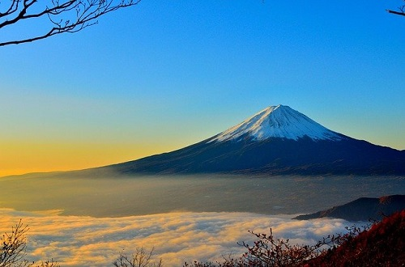
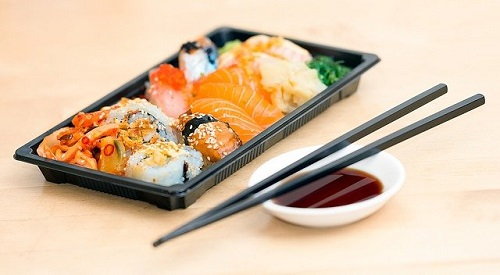
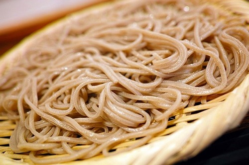
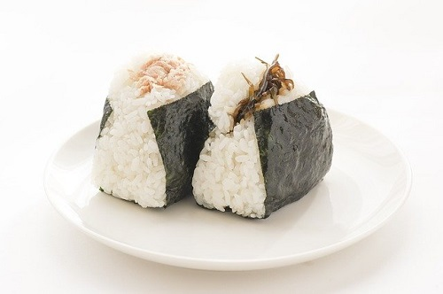

富士山

富士山（ふじさん、英語: Mount Fuji）は、山梨県（富士吉田市、南都留郡鳴沢村）と、静岡県（富士宮市、裾野市、富士市、御殿場市、駿東郡小山町）に跨る活火山である。 標高3776.12 m、日本最高峰（剣ヶ峰）の独立峰で、その優美な風貌は日本国外でも日本の象徴として広く知られている。 数多くの芸術作品の題材とされ芸術面のみならず、気候や地層など地質学的にも社会的に大きな影響を与えている。 懸垂曲線の山容を有した玄武岩質成層火山で構成され、その山体は駿河湾の海岸まで及ぶ。
食べ物


日本料理（にほんりょうり、にっぽんりょうり）は、日本の風土と社会で発達した料理をいう。洋食に対して和食（わしょく）とも呼ぶ。 食品本来の味を利用し、旬などの季節感を大切にする特徴がある[6]。和食は2013年にユネスコ無形文化遺産に登録された。 広義には日本に由来して日常作り食べている食事を含むが、狭義には精進料理や懐石料理などの形式を踏まえたものや、 御節料理や彼岸のぼたもち、花見や月見における団子、冬至のカボチャなど伝統的な行事によるものである。
